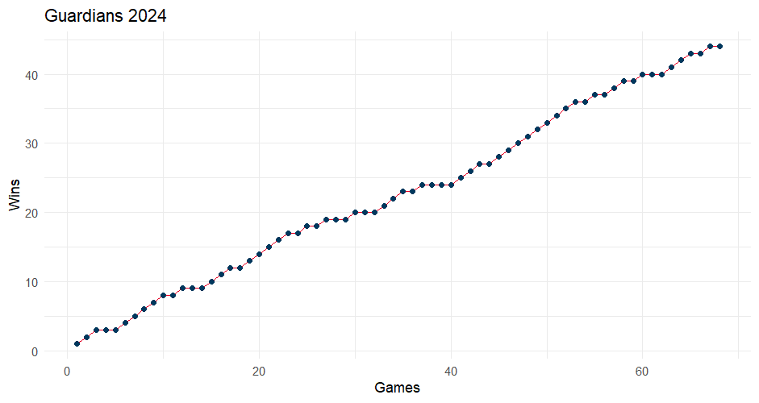
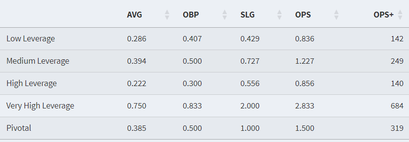
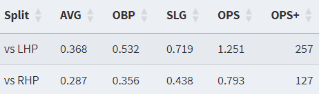

Let's Talk About the Guards
As of writing this on June 16th, the Cleveland Guardians are shocking Major League Baseball this year as they currently sit at 44-25 which places them atop the American League Central with a 5-game cushion. More importantly, this also places them 3rd in the entire AL, only behind the New York Yankees and Baltimore Orioles. According to this article by USA Today, the Yankees rank 2nd in the entire MLB in payroll at over $300 million, but Cleveland ranks 2nd last, at 28th in the MLB, with a payroll of less than $100 million. With a lineup constructed of players paid less than 1/3 of what the top teams are paid, how is Cleveland generating wins? Let's dive deeper:
Emergence of David Fry
Let's address the elephant in the room: David Fry. As a 7th-round pick who was part of an under-the-radar trade for Cleveland back in 2022, Fry has exploded onto the scene in his first full big league season. With an astounding .317/.443/.547 triple slash, he's arguably been a top 5 hitter in all of baseball so far. If you look at his Baseball Savant page, the numbers speak for themselves. The xBA, xwOBA, and his batting run value are all in the 80th percentile in baseball. He's walking almost as much as he's striking out, driving in runs, and working counts at an extremely mature level. All of this is great, but what else is making him such a key piece of this offense? Using R, I built a Shiny app for hitters (and pitchers later) that uses Statcast's publicly available data to further analyze all of the Guardians hitters. How deep can we go?
When looking at some of his more advanced statistics, one thing that immediately stands out is his ability in the clutch, or "when it matters most." According to Tom Tango's leverage index, there are four levels of what they call leverage: Low, Medium, High, and Very High. In a "Very High" leverage scenario, one swing of the bat or one strikeout can completely change the complexion of the entire game. And in "High" and "Very High" leverage scenarios, to put it simply, David Fry rakes. Albeit a small sample size of 13 at-bats, Fry adds almost 70 points of Batting Average (BA) and almost 500 points of On Base Plus Slugging (OPS). Additionally, he has a BA of .421 and an OPS of 1.192 with Runners in Scoring Position (RISP).
Another key factor in Fry's game is his annihilation of left-handed pitching (LHP). Stephen Vogt, the first-year manager for the Guardians, is developing a trademark habit of aggressively platooning his players. Basically put, he wants his right-handed batters facing left-handed pitchers, and he wants his left-handed batters facing right-handed pitchers. Although Fry is not a platoon-specific player, there's a noticeable difference in the numbers based on pitcher handedness:
That's good for over 80 points of BA and over 450 points of OPS that he gains facing LHP versus RHP. But even then, he's still a very solid bat against RHP. A key bat against RHP, and a top 3 hitter in the league against LHP? Usually a good combination.
One of the largest factors in the emergence of Fry's game is his improvements in swing decisions. He is chasing out of the zone at a 21% clip, striking out at a 17% clip, and walking at a 15% clip, all of which are 70th percentile in MLB. Compare that to his 2023 numbers of 38% chase, 26% strikeout, and 7% walk rates, and you notice trends of an extremely matured hitter in an incredibly short time span. During his 2023 stint, he only played in 57 games, amassing 101 at-bats. So far in 2024, he has surpassed his at-bat number with 139 in only 50 games, meaning he is seeing more quality time on the field as an everyday player.
The Rest of the Offense
Although the surprise of David Fry has been more than beneficial, it's important to not forget the rest of this Guardians offense. Jose Ramirez and Steven Kwan are hitting like all-stars, Daniel Schneeman is off to a hot start since his debut, and guys like Josh Naylor, Andres Gimenez, and Will Brennan are having adequate seasons themselves. Similarly to Fry, the rest of the Guardians up the ante when it comes to the big moments. They add over 60 points of BA and over 200 points of OPS when comparing statistics from a bases-empty situation to a RISP situation. Additionally, in "Very High" leverage situations, they are slashing a combined .306/.362/.516 with an .878 OPS, for a wicked 150 OPS+. Remember, this is only during the most important at-bats of the game.
Additionally, the value of Steven Kwan cannot be understated. The Gold Glove left fielder is off to a ridiculous start in 2024, posting a .386/.447/.538 triple slash for a .985 OPS, or a 184 OPS+. Granted, he did miss 3 weeks of the season with a hamstring injury, but the numbers don't lie. He's only a few games away from qualifying as an every-day player, and he's got the current MLB batting average leader, Luis Arraez, beat by almost 50 points. Not much has changed in Kwan's approach from 2023: he's still an elite bat-to-ball contact hitter, ranking 95th percentile or higher in Chase%, Whiff%, and K%. Notedly, his Batting Average On Balls in Play (BABIP) is posted as a .418 compared to his actual .386 BA, so some batted-ball luck could suggest the higher-than-usual batting average. Nevertheless, Kwan looks to be headed for a breakout season, proving he has more to provide than his sub-par 2023 numbers.
Although Cleveland's offense has been fantastic, there are still some glaring holes in this Guardians lineup, specifically in the catcher position. Excluding super utilityman David Fry (who has caught in only around 25% of the games he's played), the Guardians' catchers have been absolutely atrocious on offense, slashing a combined .161/.229/.248 for an OPS of .477. If this was a single player, "he" would be the single worst hitter in all of MLB. This production is going to NEED to be fixed, as a hole as glaring as this is more than problematic for any playoff-contending team.
It's not all bad news, though, as this abysmal offense comes with one positive: defense. According to the Shiny app I created, Cleveland's catchers grade out at about 3.5 runs above MLB average (top 5 in MLB), based on framing, blocking, and throwing out runners. Depending on what you value in a baseball team, it's a preference if you agree or disagree on the current Cleveland trade-off of an awful offense for top-tier defense, at least in the catcher position.

The Rotation
Cleveland's starting pitching has arguably been the worst facet of their game this year, which is quite the compliment considering their starters have a combined 4.29 Earned Run Average (ERA). That places them just below MLB average, at 17th out of 30 teams. This also comes at the loss of Shane Bieber, as the ace of the staff was only 2 starts into the season when it was announced that he would need season-ending Tommy John surgery.
The 2024 Cleveland rotation has been strongly backed by another surprising player outburst in Ben Lively. As a 4th-round draft pick way back in 2013, Lively made his big league debut with a 2 month stint for the Phillies in 2017. He then appeared in 1 game for the Royals in 2019, got a few spot starts with the Reds in 2023, and now has made his way into the Guardians' starting rotation in 2024. Posting a 2.59 ERA in 10 starts and 55.2 Innings Pitched (IP) this year, he has established himself as a force on the mound, but how? He throws a 90 MPH fastball and doesn't have wicked breaking stuff. Two words: weak contact. Lively doesn't throw hard, but his fastball acts more like a sinker, inducing a ton of ground ball outs. Additionally, he's very good at keeping stuff out of the middle of the zone, especially his sinker and his sweeper, which are his two most-used pitches. Another trait is his pitch variety, as he throws a sinker, sweeper, changeup, curveball, and true slider, none of which have above a 33% usage rate. Lively is keeping hitters on their toes by mixing up pitches and forcing them into weak contact on tough pitches placed at the edge of the zone.
Another key factor for the rotation is the rise of Tanner Bibee. One of Cleveland's highly touted prospects since his 5th round signing back in 2021, Bibee has developed very well in what many call the "Cleveland Pitching Factory," alongside other Cleveland developments such as Gavin Williams, Daniel Espino, and Triston McKenzie. In 75.1 IP so far, he's posted a 3.94 ERA with only 20 walks to 87 strikeouts. Looking at his Savant page, the immediate standout is the value of his off-speed pitches, as his "Breaking Ball Run Value" and "Off-Speed Run Value" are both in the 95th percentile in all of MLB. His secondary arsenal consists of a slider, changeup, and curveball mix. Unsurprisingly, his slider and curveball are both well above MLB average in terms of movement and velocity, but oddly enough, his changeup is not. He throws an unconventional "floating" changeup and leaves it up in the zone. The idea behind this is to tunnel it off of his high fastball, and induce batters not to swing as it starts above the zone and floats down and catches the top half. So far it's been very effective, as hitters are batting only .180 off it for a 45 OPS+.

The Bullpen
The biggest story in Cleveland (besides David Fry) has been their bullpen. An absolute wrecking force thus far, they rank first in all of baseball in ERA, Runs/Earned Runs/Hits/Home Runs/Walks allowed, WHIP, and AVG against. Additionally, they rank 3rd in bullpen strikeouts and 2nd in total saves. To say they've been the best bullpen in baseball would be a bit of an understatement, but how did we get here?
First things first: Emmanuel Clase. The fireballing closer for the Guardians has established himself as a top 5 closer in baseball for many years, and his freak-show is on full display in 2024. He has what many in the industry call a "freak pitch," which is his triple-digit MPH cutter. Averaging 99.1 MPH and reaching up to as fast as 102 MPH, his cutter is truly a one-of-a-kind pitch in all of baseball, considering the average MLB cutter is around 89-90 MPH. Clase has absolutely dominated hitters with this pitch this year, using it around 83% of the time - yet still yielding incredible results. In 33.1 IP, he's racked up 35 strikeouts, while only surrendering 3 walks. His Baseball Savant page is absolutely glorious to any pitching coach, as he is in the 85th percentile for xERA, AVG EV, Whiff%, K%, Barrel%, and Hard-Hit%, while also being in the 95th percentile for Pitching Run Value, Chase%, BB%, and GB%. With an arguably top 10 pitch in all of baseball, it's not incredibly difficult to see why Clase gets these results.
An additional key note in the rise of the Cleveland bullpen has been the development of Cade Smith, a 16th-round pick in 2017. Smith has absolutely burst onto the scene for his rookie campaign, posting a 1.72 ERA with 41 K's in 31.1 IP. He relies on his heavy fastball, which averages at 96 MPH. He also dabbles in splitters and sweepers, both of which are above league average by movement and velocity metrics. When looking at Smith, his savant page has one glowing asset: his extension. At 6'5", he gets an average extension off the mound of 7.5 feet, putting him in the 99th percentile in all of baseball. This essentially adds perceived velocity for the pitch against the hitters he faces, as instead of coming from 60'6", a pitch is coming out of his hand at around 53'. Because of this, his raw 96 MPH fastball behaves more like a 100 MPH heater, making it the 4th most valuable pitch in baseball, according to Statcast's Run Value metrics. The same can be applied to all of his other pitches, as his splitter and sweeper gain about 4-5 MPH of perceived velocity simply because of his excellent extension point.

Finally, Cleveland's go-to middle relief guys such as Hunter Gaddis, Nick Sandlin, and Tim Herrin have had excellent seasons themselves, posting ERA's of 1.67, 2.54, and 0.96 respectively in a combined 88.2 innings of relief duty. With these middle guys, I'm noticing a trend of more pitch variety and usages between counts. These are not your blow-you-away guys - they're pesky, annoying barrel missers who induce weak contact, and they're very good at it.
Similarly to the offense, the Guardians bullpen is built for the big stage. In the "Pivotal" at-bats described earlier, hitters are slashing .212/.273/.337 for a .610 OPS, or a 75 OPS+. In those 466 at-bats, they've given up 99 hits and 33 walks, but struck out an impressive 133 batters. When it comes to the Very High leverage, game-on-the-line moments, the bullpen is even better, giving up a .212/.220/.325 slash for a .545 OPS and a 55 OPS+. Admittedly, a lot of these moments are handled by their anchor in Clase, but it helps to see that he has guys backing him up if he can't go out there due to circumstances such as fatigue or other miscellaneous problems.
Conclusion
The 2024 Cleveland Guardians are quite the cast of characters. Fueled by a combination of surprising new players and a few all-star veterans, Cleveland is looking to make their way back to the playoffs after missing in 2023. Can they continue this "improbable" run, as thought by many? The expected stats say that they should, but only time will tell.